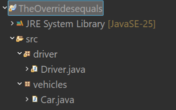
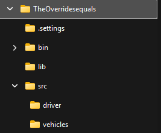

Organizing a Java Project for Submission
TIn this course, unless otherwise specified, I do not care which IDE you use to code your Java project (Eclipse, VS Code, Neovim, Emacs, or even just a text editor). However, all projects must be organized similarly to an Eclipse project. For example:
| Eclipse | File System |
|---|---|
|  |  |
Project folder – this folder must be named according to any instructions, e.g., lastlabw01
src folder – all source code files must be in the package subfolders of this subfolder
package – the package is really just a subfolder in the file system, like driver and vehicles
source files – all your source code files for that package, like Driver.java
- You do not need to submit the bin folder; I will compile your source code. It is okay to include it, but it is unnecessary.
- No need to include the settings folder, but it is fine if you do.
- Include a lib folder if external libraries are used, varying by assignment.
- Committing an Eclipse project with Git usually includes everything needed, but other IDEs may require setup.